Практичні курси · журнал «ДентАрт» 2017 №2
...чи не пора переосмислити Естетичну Стоматологію?
…IS IT TIME TO RETHINK AESTHETIC DENTISTRY?
Чим стала сьогодні Естетична Стоматологія? Очевидно, це залежить від точки зору. Якщо судити з публікацій на Facebook чи шоу-презентацій на великих заходах, вони візуально захоплюють і надихають як безперечно артистичні. З точки зору пацієнтів, безліч зображень у засобах масової інформації та інтернеті викликать певну заздрість і бажання мати біліші та рівніші зуби..., врешті-решт даючи їм справді привабливішу усмішку.
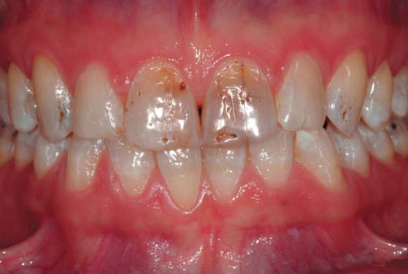
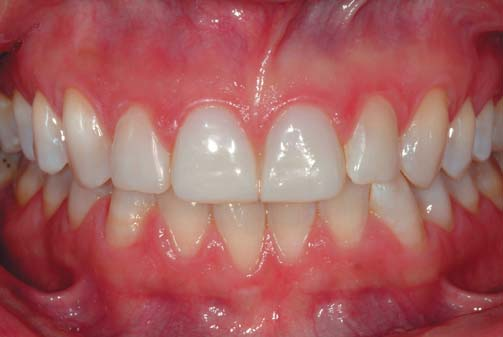
Те, що може статися далі, залежатиме від того, до кого першого пацієнт потрапить на прийом: ортодонта, стоматолога-реставратора чи стоматолога-ортопеда? Ось цей перший крок пацієнта, ймовірно, і визначить, чи буде лікування біологічним, консервативним і оборотним, а також наскільки дорогим воно може бути як у короткостроковій, так і в довгостроковій перспективі.
З технічної точки зору, в залежності від обраного матеріалу і клінічного протоколу, воно буде «простішим», якщо ми оберемо непрямий підхід з використанням кераміки або технології CAD/CAM, і, безумовно, більш претенціозним, якщо ми оберемо пряму техніку з використанням композиту..., але ми, безперечно, можемо досягти гарних результатів в обох випадках. Однак тут існує багато суперечностей, зокрема наявність деяких додаткових факторів, які повинні перебувати в балансі, наприклад, вік пацієнта, його психологічний статус, фінансові можливості (нинішні і в очікуваному майбутньому), загальний біофункціональный статус (карієс, пародонтологічний і функціональний фактори ризику), і його потенційне сприяння при тривалому динамічному спостереженні і контролі за цими специфічними факторами ризику. Нарешті, слід оцінити реальні потреби пацієнта у стоматологічній допомозі та співставити всі чинники без впливу комерційної зацікавленості чи «стоматологічної моди». Наскільки нинішня реальність близька до такої чесноти? Абсолютно очевидно, що ні, вона далека від цього справжнього образу, і можливо, пора підлаштувати або перебудувати Естетичну Стоматологію для іншого майбутнього.
Як ми можемо вплинути на таке майбутнє? Достатньо лише дотримуватися кількох простих правил і концепцій, яких нас учили під час нашої стоматологічної освіти, починаючи з базової концепції «primum non nocere» (найперше — не зашкодь!), а потім уже лікувати наших пацієнтів так, наче вони найближчі члени нашої сім'ї. Додайте до цього відомий біологічний та біомеханічний принцип (Magne, 1999 і 2006) плюс здоровий глузд, і ми зможемо побачити повну картину справедливої і по-справжньому сучасної Естетичної Стоматології, «орієнтованої на пацієнта» (а не на «стоматологічну моду»), «специфічну, поетапну зуб за зубом» техніку (замість того, щоб дотримуватися «монотерапевтичного» підходу, який веде до виготовлення 28 подібних реставрацій), і спрямованої на досягнення «природної краси», а не «стереотипної штучної естетики» (Dietschi, 2005). Це щось нове? Можливо, ні, і дуже важливо працювати ще серйозніше, щоб вести професійну діяльність у відповідності з цими простими підходами і принципами.
Мета цієї статті — на прикладі комплексного і оригінального клінічного випадку ілюстрація і мотивація читачів до перегляду деяких існуючих принципів та клінічних рекомендацій для забезпечення естетичних потреб наших пацієнтів з використанням біомеханічно безпечних і економічно ефективних процедур.
Клінічний приклад
Жінка віком 46 років звернулася на консультацію зі скаргами на естетичні проблеми, пов'язані із зовнішнім виглядом її усмішки і загальним станом ротової порожнини (фото 1 а-f). Її основні скарги стосувалися зміни кольору передніх зубів (обидва центральних різці стали темнішими протягом останніх 5 років), крім того, вона відчувала деяке функціональне і м'язове напруження. При клінічному обстеженні виявлено генералізовану форму емалевої дисплазії/гіпоплазії, яка має або генетичну природу (amelogenesis imperfecta), або, згідно з деякими клінічними спостереженнями, є проявом флюорозу середнього ступеня, пов'язаного з неадекватним споживанням чи контактом з флюоридами (очевидних факторів, що вказують на таку природу патології, у процесі збору анамнезу виявлено не було). Не можна виключати і можливу комбінацію згаданих порушень розвитку емалі. Були помічені зони стирання на піднебінній поверхні верхніх різців та іклів, а також відколи й стертість нижніх різців та іклів (фото 1 в, е, f); крім того, були окремі зони стирання на оклюзійних поверхнях практично всіх бічних зубів, але без значного оголення дентину (фото 1 с, d).
Незважаючи на те, що основним бажанням пацієнтки було поліпшення естетики, вона не хотіла значних, а отже дорогих реставраційних втручань і сподівалася на консервативне вирішення її стоматологічних проблем. Відмовившись від застосування надлишкових за втручаннями непрямих керамічних реставрацій (наприклад, вініри і оклюзійні накладки), зважаючи на обмежені фінансові можливості пацієнтки, а також недостатність чітко окресленої біомеханічної раціональності такого підходу, ми запропонували поданий нижче план і протокол маніпуляцій, який і було згодом виконано:
- Вітальне відбілювання
- Незначна корекція вертикального оклюзійного співвідношення (VDO — vertical dimension of occlusion) у прямій техніці
- Реставрація/захист стертих передніх зубів (верхніх з піднебінної поверхні і нижніх ріжучих країв і рвучих горбів)
- Безпрепарувальна реставрація зовнішніх дефектів на верхніх і нижніх зубах (після процедури відбілювання) з використанням піскоструминної обробки та прямої реставрації
- Непрямі керамічні вініри на зуби 11 і 21 (польовошпатна кераміка)
- Постійна захисна капа на ніч
Процедура вітального відбілювання проведена в техніці домашнього відбілювання з використанням гелю 10% пероксиду карбаміду (Zoom NiteWhite, Philips) протягом 3-4-тижневого періоду (мінімум 20 застосувань на кожну щелепу).
Наступним кроком у відповідності зі складеним планом лікування було незначне підвищення вертикального оклюзійного співвідношення (VDO) (Abduo, 2012) для забезпечення можливості виконання безпрепарувальних реставрацій стертих поверхневих площин/дефектів передніх зубів на верхній і нижній щелепах (фото 2 а-g).
Поверхні були очищені за допомогою піскоструминної обробки (25-30 μm Al2O3; Microetcher II, Danville) і дрібнодисперсними алмазними борами (полум'яподібні або кулясті, зернистість 40 μm) з метою підготовки до адгезивного протоколу, особливо в зонах, змінених флюорозом. Емаль протягом 60 с була протравлена кислотою з наступним ретельним змиванням і нанесенням 3-крокової адгезивної системи в техніці тотального протравлювання (Optibond FL, Kerr).
Потім були відновлені горби нижніх молярів і премолярів з використанням текучого або традиційного композиту емалевих відтінків (Inspiro flow або Skin White, Edelweiss DR), зі створенням оптимального міжзубного оклюзійного простору (близько 2,5-3 мм) (фото 2 с, d і f). Раціональність використання текучого композиту на молярах ґрунтується на тому факті, що морфологічна та функціональна корекція не повинна бути постійною, а згідно з раціональністю техніки Даля (Saha, Summerwill, 2004), трохи вираженіше стирання доданого матеріалу ніяк не вплине на результат і успішність лікування. Отриманий простір дозволив додати приблизно 1,5 мм композитного матеріалу як з боку піднебінної поверхні верхніх різців та іклів, так і в зоні ріжучих країв нижніх різців і рвучих горбів іклів.
Після корекції латеро-протрузійних рухів, позиціонування максимального міжгорбикового контакту і центрального співвідношення пацієнтка була готова до початку естетичного відновлення дефектів і дисколоритів на вестибулярних поверхнях.
Для цього ті зони дисколоритів і гіпопластичних дефектів, які залишилися, могли бути реставровані згідно з планом лікування зі 100% безпрепарувальним підходом, крім верхніх центральних різців (фото 3 а-k). Дефекти емалі були очищені разом з більшістю поверхневих зон білих дисколоритів з використанням тієї ж комбінації піскоструминної обробки (30 μm Al2O3) і фінішних алмазних борів (40 μm), а також крупнозернистих фінішних дисків (Optidisc, Kerr) (фото 3 с-g); бори та диски використовувалися тільки для згладжування емалі там, де це було потрібно. Відразу після адгезивної підготовки, як було описано вище, використовувалася комбінація текучого і традиційного композиту емалевих відтінків (Inspiro) — у відповідності з розмірами дефектів (текучий композит у зоні мікродефектів і композит звичайної щільності — для дефектів більшого розміру) (фото 3 h, i). Ця техніка застосовувалася у всіх дефектах і дисколоритах на вестибулярній поверхні верхніх і нижніх зубів (від першого моляра до першого моляра верхньої щелепи і від другого моляра до другого моляра нижньої щелепи) (фото 3 j, k).
Для отримання оптимальної анатомії і правильного відтінку було обрано найбільш оптимальний варіант лікування у вигляді виготовлення вінірів на верхні центральні різці (фото 4 а-е). Оскільки для пацієнтки пріоритетом лікування була естетика центральних різців, прийнято рішення про виготовлення польовошпатних керамічних вінірів з оптимальною якістю поверхні, інтеграцією відтінку і реставраційною «стабільністю» (Magne і співавт., 2000; Albanesi і співавт., 2016; Morimoto і співавт., 2016), незважаючи на те, що і композитна реставрація могла б стати альтернативним вирішенням цієї проблеми.
Перед препаруванням зубів виконано діагностичний мокап (у вільній техніці з використанням текучого композиту) для підтвердження бажаної довжини, вигляду зовнішньої поверхні і товщини майбутніх реставрацій (фото 4 b). Після схвалення пацієнтки було виготовлено силіконовий ключ як орієнтир для препарування, а також виготовлення тимчасових реставрацій (фото 4 c-е).
Лікування завершене адгезивною фіксацією двох непрямих керамічних вінірів із застосуванням традиційної техніки (протравлювання вінірів буферизованою плавиковою кислотою, силанізація, змочування поверхні гідрофобним бондом і фіксація на розігрітий композит емалевого відтінку (White Skin, Inspiro) (фото 5 а-f).
Для збереження отриманого результату була виготовлена захисна капа night guard товщиною 1,5 мм (Erkodur C, Erkodent) з метою обмеження подальшого стирання зубів і ризику відколу реставрацій (композитні реставрації на нижніх фронтальних зубах і піднебінних поверхнях верхніх фронтальних зубів); пацієнтці дано інструкції про необхідність використання капи щоночі.
Обговорення
Пацієнтка, 46 років, звернулася на консультацію з помірним, але таким, що потенційно погіршується і тривожить її, естетичним станом з метою естетичної реабілітації, при цьому вона мала обмежені фінансові можливості і бажання отримати максимально неінвазивне лікування. Для таких пацієнтів прийняття рішення більшою мірою залежатиме від запропонованих їм варіантів лікування, враховуючи біомеханічний стан зубів, що підлягають втручанню, і довговічність (естетичні та функціональні властивості) обраних матеріалів (Magne і співавт., 2000; Heintze і співавт., 2015; Demarco і співавт., 2015; Albanesi і співавт., 2016; Morimoto і співавт., 2016).
У цьому конкретному випадку, незважаючи на зовнішній вигляд передніх зубів і тривале функціональне стирання твердих тканин, згідно з раціональним підходом було рекомендовано обмежити використання непрямих керамічних реставрацій (за винятком зубів 11 і 21) після вітального відбілювання та прямої реставрації всіх інших дефектів у техніці «noprep», з використанням комбінації текучого і реставраційного композиту (Dietschi, 2008).
Така концепція лікування базувалася на незначній втраті твердих тканин, вітальності та помірній стертості всіх зубів; разом з тим, пацієнтка виявила бажання до співпраці і погодилася носити захисну капу night guard, що є гарною основою для постреставраційної фази лікування.
Єдиний ризик у разі недостатнього співробітництва пацієнта при використанні захисної капи — це можливі часткові відколи реставрацій (функціональні зони з «тонким» композитним перекриттям), які є незначним ускладненням і можуть бути легко виправлені (але відколи можливі і в межах керамічних реставрацій).
Комплексна консервативна реставрація зубів
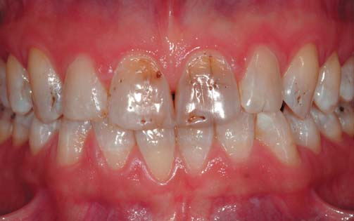
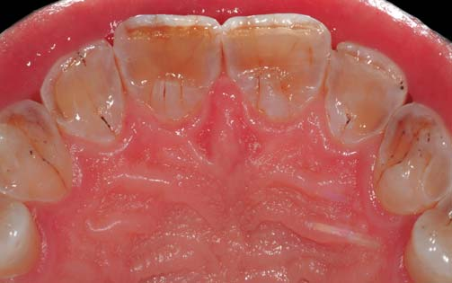
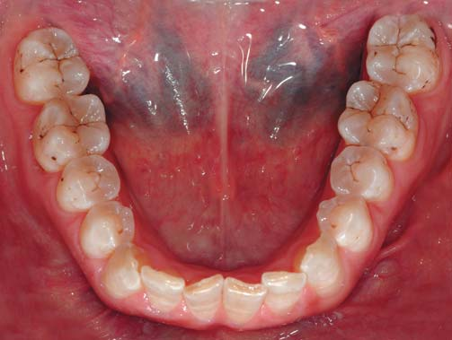


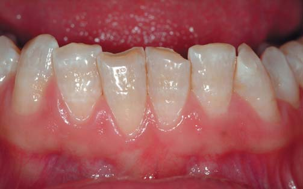
Фото 1 a-f. Попередній стоматологічний статус пацієнтки 46 років, яка прийшла на консультацію в основному з естетичними скаргами на зміну кольору зубів (гіпоплазія і дисплазія). Проведено диференціальну діагностику з флюорозом, проте не було встановлено об'єктивних даних, що підтверджують надлишкове надходження фторидів в організм. Чітко візуалізуються значні дефекти у вигляді стирання твердих тканин, відколи в зоні ріжучих країв нижніх різців, а також ознаки парафункціональної активності. У першу чергу пацієнтку цікавило питання естетичного (а в другу — функціонального) поліпшення, але без об'ємних і дорогих реставраційних втручань.

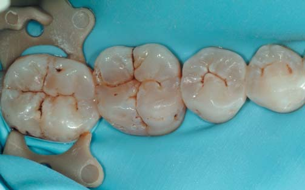
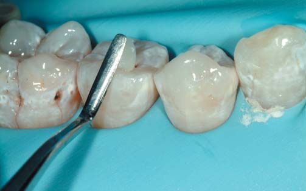

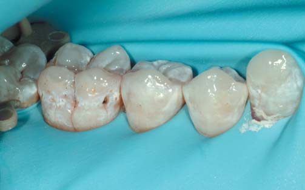

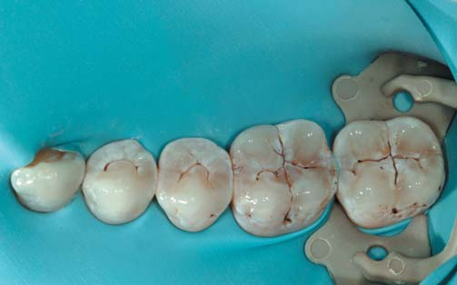
Фото 2 a. Ізоляція бічних сегментів перед виконанням невеликого збільшення вертикального міжоклюзійного співвідношення (VDO), це створить близько 1,5 мм міжоклюзійного простору у фронтальній ділянці для відновлення піднебінної поверхні передніх верхніх зубів, а також ріжучих країв і рвучих горбів передніх нижніх зубів.
Фото 2 b-d. Після піскоструминної обробки поверхні емалі ті поверхні, що модифікуються, були кондиціоновані і підготовані для прямої реставрації з використанням текучого композиту і емалевого відтінку матеріалу звичайної щільності (White Skin, Inspiro, Edelweiss DR) в зоні нижніх молярів, премолярів, а також рвучих горбів іклів.
Фото 2 e. Завершена корекція вертикального міжоклюзійного співвідношення нижньої правої ділянки (моляри та ікло).
Фото 2 f-g. Точно таке саме лікування виконано з лівого боку нижньої щелепи.
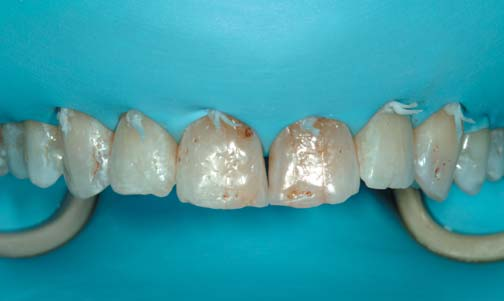

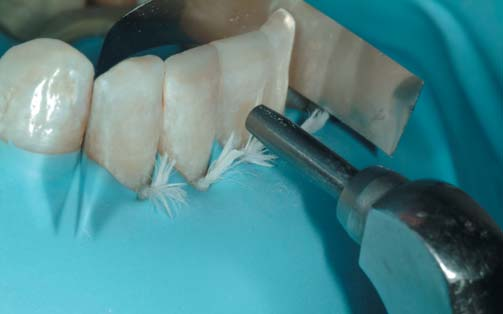
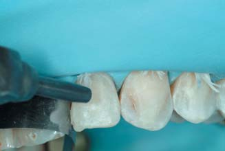
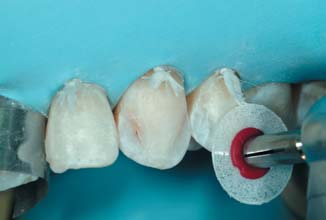
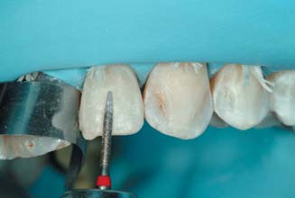

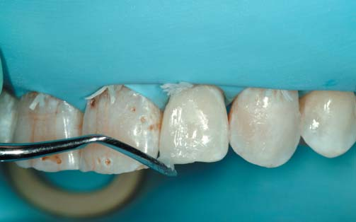
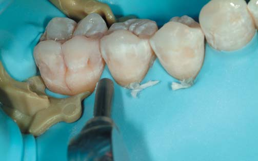
Фото 3 a-b. Повна ізоляція нижньої і верхньої зубних дуг з метою корекції дисколоритів та дефектів емалі, що залишилися.
Фото 3 b-f. Видалення білих дисколоритів і підготовка до адгезивного протоколу виконані із застосуванням піскоструминної обробки (25-30 μm Al2O3), фінішних борів (полум'яподібний 40 μm) і фінішних дисків (Optidisc, Kerr).
Фото 3 h-i. Реставрації виконані з використанням традиційного або текучого композиту емалевого відтінку (White Skin, Inspiro, Edelweiss DR), в залежності від розміру дефекту та/або функціональних навантажень.
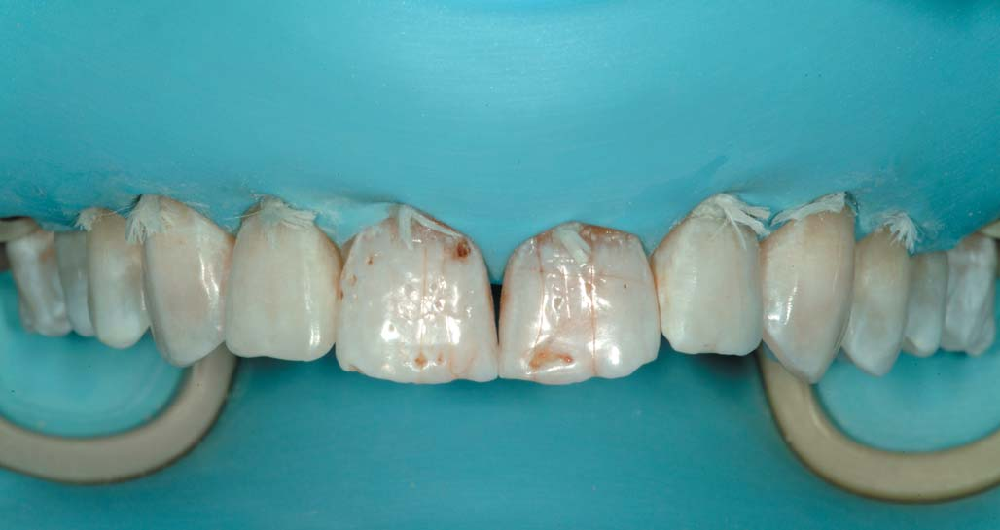

Фото 3 j-k. Завершене відновлення форми зубів з вестибулярними дефектами на верхній і нижній щелепі, проте центральні різці ще вимагають втручання.

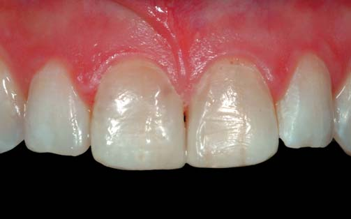
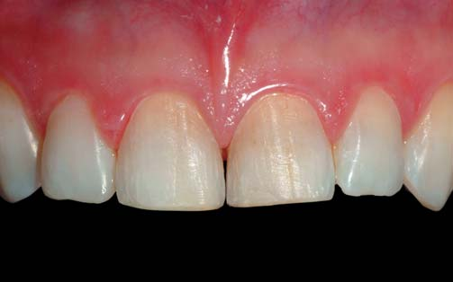

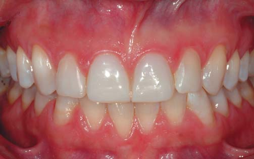
Фото 4 a. Верхні центральні різці перед виготовленням вінірів.
Фото 4 b. Корекція довжини виконана у відповідності з побажаннями пацієнтки, а обсяг скоригований у техніці «вільної руки» за допомогою текучого композиту безпосередньо перед виготовленням силіконового ключа для реєстрації нової конфігурації. Це потрібно для контролю глибини препарування та виготовлення тимчасових конструкцій. Техніку вільного дизайну було обрано як оптимальну, зважаючи на втручання лише на двох зубах.
Фото 4 c-d. Вигляд з ключем для препарування і після обробки.
Фото 4 e. Встановлено тимчасові конструкції, виготовлені з матеріалу подвійного отвердіння (Protemp Garant, 3M).
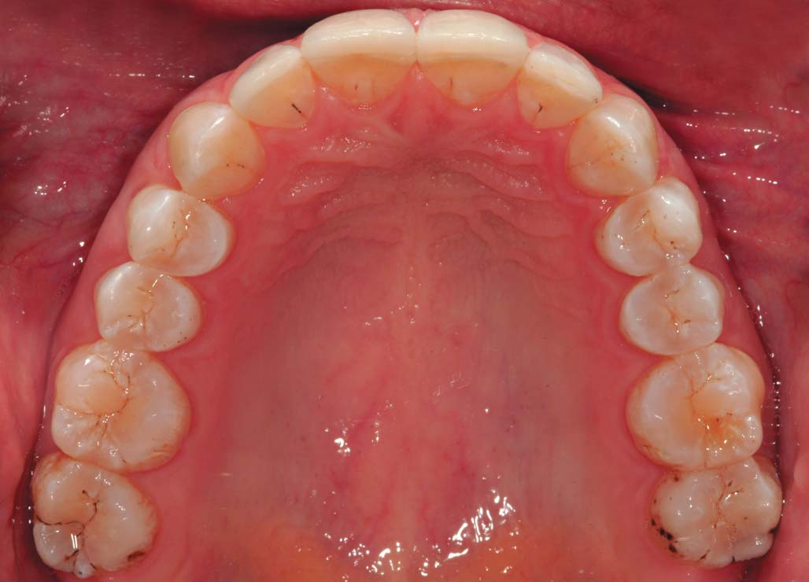
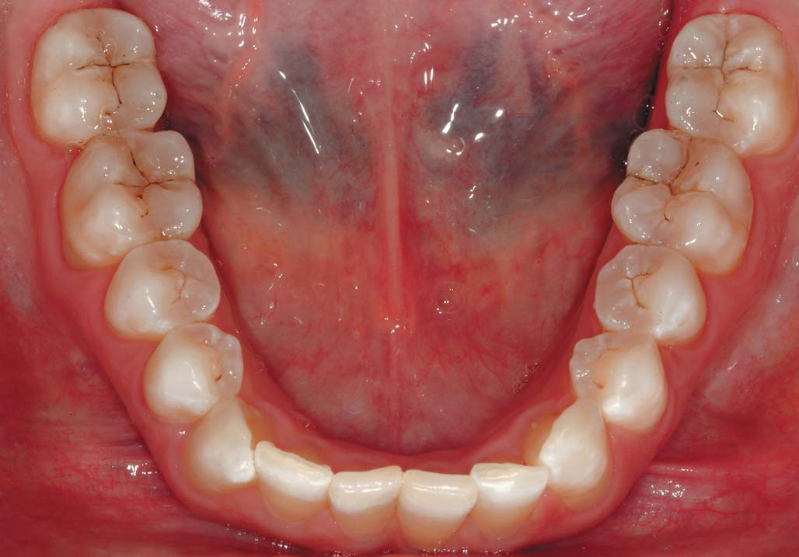
Фото 5 a-b. Оклюзійні поверхні і виконані естетичні та функціональні реставрації.

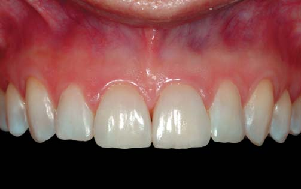
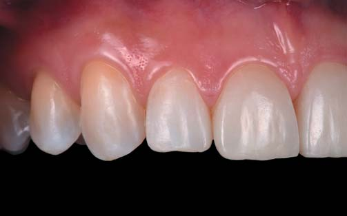
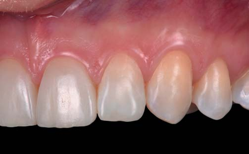

Фото 5 c-g. Усмішка, фронтальна і латеральна проекції верхніх і нижніх передніх зубів після 100% безпрепарувального лікування у прямій техніці з використанням текучого композиту і композиту звичайної щільності; лише верхні центральні різці були відновлені непрямим способом після мінімально-інвазивного препарування та виготовлення польовошпатних вінірів.
Висновки
Запропонований підхід дозволив повноцінно охопити як функціональні, так і естетичні вимоги у клінічному випадку з наявністю дискоролиту/стирання зубів зі 100% безпрепарувальним підходом у 26 з 28 зубів, де тільки два зуби були оброблені в мінімально-інвазивної техніці для виготовлення двох керамічних вінірів. Такий задовільний естетичний результат з майже нульовим біомеханічними втручанням, а також фінансово ефективним підходом був би неможливий при використанні сучасних трендів, дотримуючись яких, виготовлення надлишкових за втручаннями цільнокерамічних реставрацій у технології CAD/CAM рекомендують для вирішення практично будь-яких естетичних проблем. Настала пора переосмислити і знову подивитися на Естетичну Стоматологію із застосуванням більш обґрунтованої і біомеханічно правильної концепції, а також плануючи та виконуючи послідовне відновлення зубів. Такий підхід відкриває двері пацієнтам, які бажають поліпшити естетичний стан своїх зубів і усмішку за межами студентської поліклініки або при участі в навчальних заходах. Ми повинні розуміти той факт, що незважаючи на вражаючі результати після реставрації зубів у великій кількості клінічних випадків, які ми бачимо в інтернеті, журналах та на великих стоматологічних шоу, вони часто не відповідають щоденній практиці, здійсненності і доступності для значної частини наших пацієнтів.
Переклад Станіслава Гераніна
Література
- Abduo J. Safety of increasing vertical dimension of occlusion: a systematic review. Quintessence Int. 2012;43(5):369-380.
- Albanesi RB, Pigozzo MN, Sesma N, Lagana DC, Morimoto S. Incisal coverage or not in ceramic laminate veneers: A systematic review and meta-analysis. J Dent 2016;52:1-7.
- Demarco FF, Collares K, Coelho-de-Souza FH, Correa MB, Cenci MS, Moraes RR, Opdam NJ. Anterior composite restorations: A systematic review on long-term survival and reasons for failure. Dent Mater. 2015 31(10):1214-1224.
- Dietschi D, Fahl N Jr. Shading concepts and layering techniques to master direct anterior composite restorations: an update. Br Dent J 2016;221(12):765-771.
- Dietschi D. Bright and white: Is it always right? J Esthet Restor Dent. 2005;17(3):183-190
- Dietschi D. Optimizing smile composition and esthetics with resin composites and other conservative esthetic procedures. Eur J Esthetic Dent 2008;3(1):274-289.
- Heintze SD, Rousson V, Hickel R. Clinical effectiveness of direct anterior restorations — a meta-analysis. Dent Mater 2015;31(5):481-495.
- Magne P, Douglas WH. Rationalization of esthetic restorative dentistry based on biomimetics. Esthet Dent. 1999;11(1):5-15.
- Magne P, Perroud R, Hodges JS, Belser UC. Clinical performance of novel-design porcelain veneers for the recovery of coronal volume and length. Int J Periodontics Restorative Dent. 2000 Oct;20(5):440-457.
- Magne P. Composite resins and bonded porcelain: the postamalgam era? Calif Dent Assoc 2006;34(2):135-47.
- Morimoto S, Albanesi RB, Sesma N, Agra CM, Braga MM. Main Clinical Outcomes of Feldspathic Porcelain and Glass-Ceramic Laminate Veneers: A Systematic Review and Meta-Analysis of Survival and Complication Rates. Int J Prosthodont 2016;29(1):38-49.
- Poyser NJ, Porter RWJ, Briggs PFA, Chana HS, Kelleher MGD. The Dahl Concept: past, present and future. British Dental Journal 2005;198(11):669-676.
- Saha S1, Summerwill AJ. Reviewing the concept of Dahl. Dent Update. 2004;31(8):442-4, 446-7.